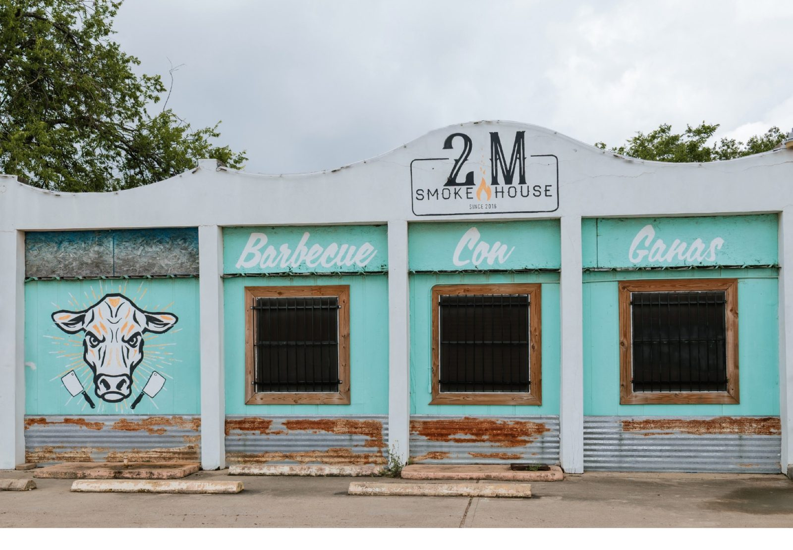

Meats by the pound
Prime brisket, Texas beef rib, pork ribs, orange pork belly, orange lemon pepper turkey and pulled pork with green salsa, hand-carved.
Plan this →
Barbecue · San Antonio, TX
Prime brisket, beef ribs and house-made sausage smoked over post oak, with scratch-made sides.

Smoked before sunrise
Meats by the pound, family meals for the table, and scratch-made sides.
Prime brisket, Texas beef rib, pork ribs, orange pork belly, orange lemon pepper turkey and pulled pork with green salsa, hand-carved.
Plan this →
Smoked meat, signature sides, bread and the fixings. Plenty for leftovers.
Plan this →
WW White sausage with serranos and Oaxaca cheese, chicharrón mac and cheese, Mexican street corn, and desserts by Chef Grecia Ramos.
Plan this →From call to cleanup
Meats are smoked fresh and can sell out, so earlier is better, especially on weekends.
Build a spread of brisket, ribs, sausage and sides, or take a family meal.
Limited seating inside, outdoor seating, and pickup through online ordering.
Ask about barbecue event catering through the contact form.




4.4 ★ · 2118 Google reviews
My daughter and I recently watched the most recent season of Pitmasters where Esaul & Grecia won. We bonded so much over the show that I promised her we would take a short trip just to eat at their restaurant. Everything at 2M Smokehouse was absolutely delicious!!! We ordered a medium family meal to feed four people. It said it feeds 5 -7 people. We should have listened.
My daughter and I recently watched the most recent season of Pitmasters where Esaul & Grecia won. We bonded so much over the show that I promised her we would take a short trip just to eat at their restaurant. Everything at 2M Smokehouse was absolutely delicious!!! We ordered a medium family meal to feed four people. It said it feeds 5 -7 people. We should have listened.
That was the best brisket I've had in a while. I went there at 1:30 p.m. on a Saturday with a friend, and they still had food. There was an Ube dessert that I wanted to try, but they ran out... darn... I guess I have to come back. 🤣 Good stuff. I got the mac and cheese and pulled pork. I even got their chocolate chip cookie, which was great. This place is a must-visit if you live here in San Antonio.
EVERYTHING was amazing! We had brisket, pork ribs, pork sausage, and pork belly. Never had pork belly but next time I'm here (it will be very soon!) I'm going to load up on it. This place is great! People were welcoming. Food was mouthwatering. Definitely on my list of favorite places. The outside looks a little rough, but this is definitely a diamond in the rough. Very clean inside.

Behind the table
Run by husband and wife Esaul and Grecia Ramos. He is the pitmaster, she is the pastry chef. Named in honor of Esaul's grandparents.
Central Texas technique with South Texas and Mexican flavors: serrano and Oaxaca cheese sausage, flour tortillas, chicharrón mac and cheese.
A labor of love, and very clean inside.
Before you book
Thursday to Sunday, 11 AM to 4 PM, or until sold out. Closed Monday to Wednesday.
It can happen. Everything is smoked fresh and served while supplies last, so come early on weekends.
Yes. Use the online ordering page for the latest availability and pickup options.
Yes. Use the contact form, pick Catering or Private event, and share the date and headcount.
Yes. There is on-site parking and plenty of outdoor seating. Seating inside is limited.
Get in touch
2731 S WW White Rd, San Antonio, TX 78222
Thursday to Sunday, 11 AM to 4 PM or until sold out. Come early on weekends.
San Antonio, Converse, Schertz, Boerne, New Braunfels